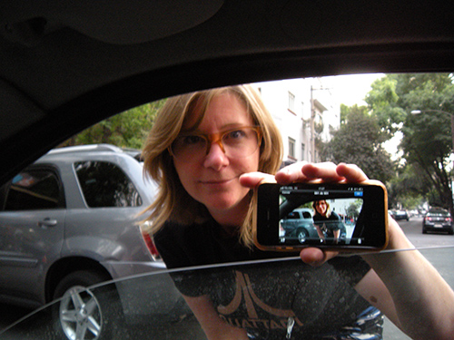

Keynotes
Becoming Latency-Native
Rebekah Wilson
Sound is a profound method of communication—it allows for subtle inter-sensory communication that is immensely effective for transmitting and tracing our physical and emotional selves over the Internet, from one location to the other. By way of our creative proxies, we reinforce and elaborate on the resonances between our hopes and needs; what we transmit resonates with our own well-springs, a need to communicate with as much richness as possible.
The richness of sound and audio technology on the Internet springs from advancements integral to developments driven by the primary concerns of commerce and science, giving rise to operable and affordable bandwidth in newly-accessible geographical areas as well as developer gains such as the growing sophistication of codecs, browser technology and frameworks. As greater developments in sound technology become available to us, greater possibilities are revealed—impressive futures loom where sound can be transmitted to and played back from a multitude of hitherto-unimagined places and objects and with progressively decreasing latencies. In the delight of this complex machinery when we consider the applications that become possible, we must equally consider the positionality of makers in relation to those who adopt and use our interfaces, i.e. we must consider good stewardship. Stewardship means acknowledging that we hold a responsibility for good governance, to take into consideration how sustainable prosperity arises through the supporting of our communities; it means that we have a responsibility to foster and diversify the ecosystems that we capitalise on and survive within. Stewardship means being the role models we wish we’d have had, and it means that while promoting what excites us—whether that is streaming, gaming, sound art, music or coding for its own sake—we must also be promoting how and why it excites us. In doing so we draw in closer those who will bring new stories and new innovations, towards cultivating thoughtful, illuminating processes of technological development in step with cultural and demographic evolution.

Rebekah Wilson is an independent researcher, technologist and composer. Originating from New Zealand she studied instrumental and electroacoustic music composition, and taught herself computer technology. In the early 2000s her intricate entwining within the tessellating narratives of Netochka Nezvanova became most public as she held the role of artistic co-director at STEIM, Amsterdam, where her passions for music, performance and technology became fused. Since 2004 she has been co-founder and technology director for Chicago’s Source Elements, developing services that exploit the possibilities of networked sound and data for the digital sound industry while continuing to perform and lecture internationally. Having recently completed her masters in the field of networked music performance, she pursues her research today while dis-entangling / re-interlacing her many technical, musical and cinematic threads.
For additional information about Rebekah Wilson's keynote, visit Extended Abstract "Becoming Latency-Native" in PDF format.
On our Past, Present, and Future with Web Audio Technologies – a participatory keynote address
Norbert Schnell
(1) Since I am infected, I often have a hard time to enjoy
concerts. Most of them feel like ancient rituals representing
the idea that we are unable to listen to and adequately
express ourselves towards each other when we are more than a
few. These rituals seem to remind us that if we express
ourselves we have to make the others listen and that if ever
we are more than a few we have to follow a leader and/or a
detailed script. Meaningful relationships are often pictured
as requiring elaborated action plans and persevering
repetition. I don't really remember how this relates to my
life.
(2) Since I am infected, I don't understand anymore why so
many creators spend so much time on producing works which
exclude their audience from the relationships they represent.
At best, the audience is allowed to observe meticulously
elaborated symbolic enactments from afar.
(3) However, I appreciate the collective silence before the
show, when all participants are united in mutual
attention.
(4) Like other communication technologies, web technologies
extend our possibilities to create, maintain, and control our
relationships to others.
(5) Music consists in its essence of metaphors for the
relationships our lives are made of and for the way we create,
maintain, and control them.
(6) What I always liked about digital music technologies is
the possibility to constantly build new instruments and
environments that play with these metaphors to embrace very
different practices, people and communities.
(7) What I particularly like about web technologies is how
they allow for effortlessly creating networks of mutual
attention and multilateral interaction that may stand as
lively metaphors for open, diverse, and pluralistic
societies.

Norbert Schnell is professor of Music Design at the Digital Media Faculty at the Furtwangen University in the center of the Black Forest. He studied Music Technology in Graz before entering the IRCAM in Paris as researcher and developer in the field of interactive digital audio processing and interaction design. He received his doctorate on key aspects of sound and interaction design with recorded sounds. He chaired the 6th International Conference on New Interfaces for Musical Expression (NIME 2006) and the first Web Audio Conference (WAC 2015), which he initiated together with Samuel Goldszmidt. Over the past years, his research focuses on exploring collective interactions based on mobile and web technologies in the context of participative art and music projects, collaborative digital media, and music pedagogy.
For additional information about Norbert Schnell's keynote, visit Extended Abstract "On our Past, Present, and Future with Web Audio Technologies" in PDF format.